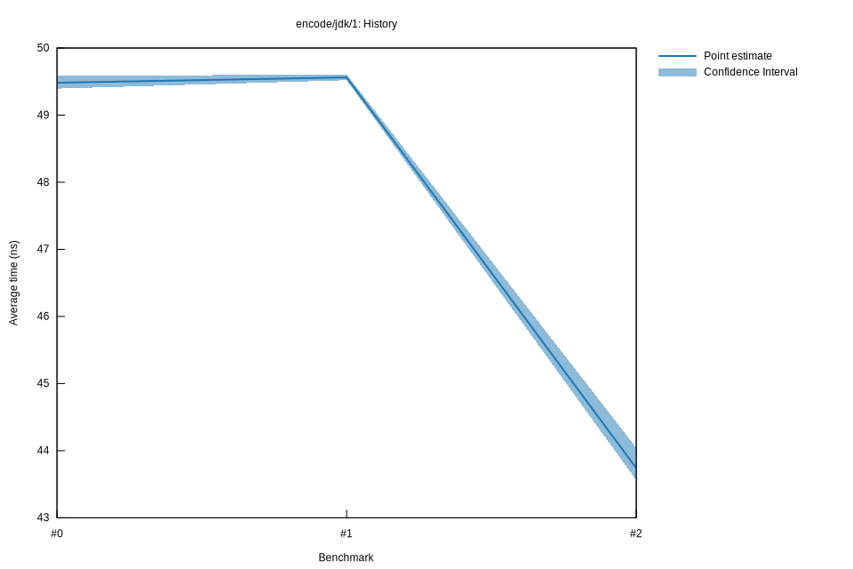

# 22022-10-16T20:00:39+03:00
|
Lower Bound |
Estimate |
Upper Bound |
| Value: |
43.56ns |
43.74ns |
44.04ns |
| Throughput: |
65.68MiB/s |
65.41MiB/s |
64.96MiB/s |
| Change in Value: |
-12.434% |
-11.821% |
-10.961% |
| Change in Throughput: |
+14.199% |
+13.406% |
+12.310% |
No change in performance detected.
# 12022-10-16T17:21:05+03:00
|
Lower Bound |
Estimate |
Upper Bound |
| Value: |
49.52ns |
49.56ns |
49.61ns |
| Throughput: |
57.78MiB/s |
57.73MiB/s |
57.67MiB/s |
| Change in Value: |
-0.2505% |
+0.3038% |
+0.8413% |
| Change in Throughput: |
+0.2511% |
-0.3029% |
-0.8343% |
Change within noise threshold.
# 02022-10-15T17:13:12+03:00
|
Lower Bound |
Estimate |
Upper Bound |
| Value: |
49.40ns |
49.48ns |
49.58ns |
| Throughput: |
57.92MiB/s |
57.82MiB/s |
57.70MiB/s |